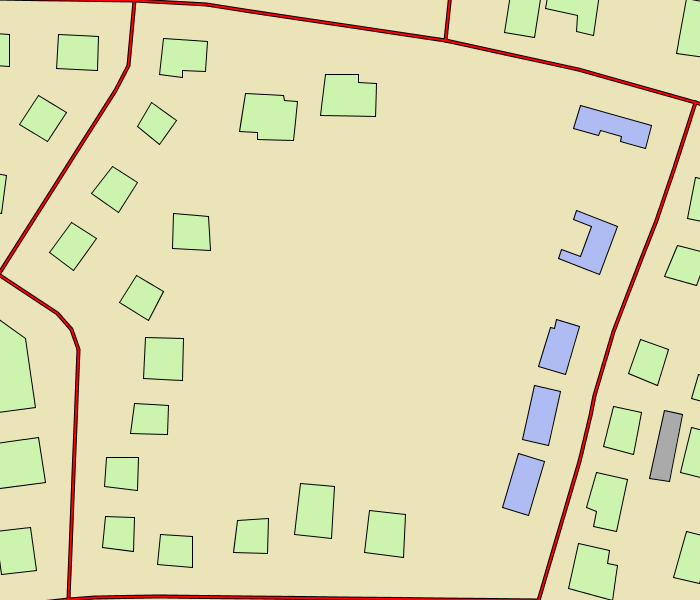

Accueil du site > Illustrations
Illustrations
Articles de cette rubrique
-
Quelques résultats de simulation : une première densification
Voici un premier résultat de simulation de la densification d’un îlot.
Vous trouverez tout en bas de la page une petite animation de cette simulation.
- Une première simulation de la densification, état initial
- Une première simulation de la densification, état 1
- Une première simulation de la densification, état 2
- Une première simulation de la densification, état 3
- Une première simulation de la densification, état 4
- 
- Une première simulation de la densification, état 5
- Une première simulation de la densification, état 6
- Une première simulation de la densification, état 7
- Une première simulation de la densification, état 8
- Une première simulation de la densification, état final
- Une première simulation de la densification, animation
-
Quelques résultats de simulation : une autre densification
Voici quelques résultats sur un autre îlot.
- Une simulation de la densification, état initial
- Une simulation de la densification, état 1
- Une simulation de la densification, état 2
- Une simulation de la densification, état 3
- Une simulation de la densification, état 4
- Une simulation de la densification, état 5
- Une simulation de la densification, état final
- Une simulation de la densification, animation